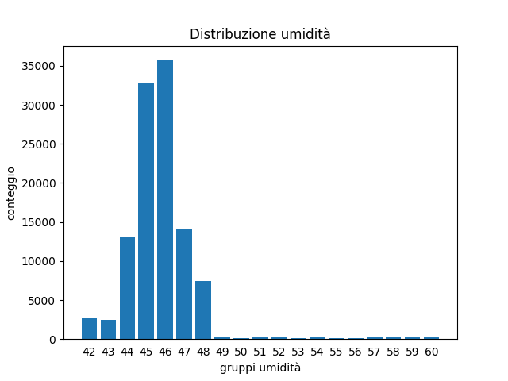
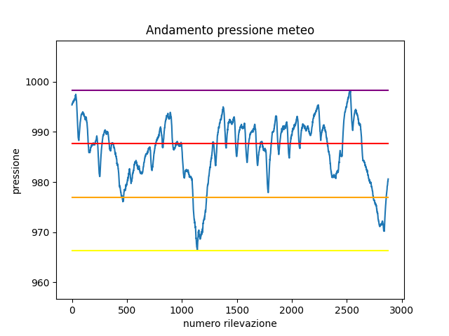
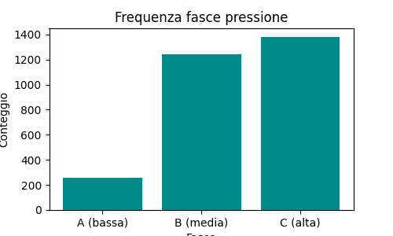

Analitiche con Pandas - 2. Operazioni avanzate
Scarica zip esercizi
Vediamo come compiere operazioni più elaborate in pandas, come il raggruppamento con groupby, la congiunzione di tabelle con merge e infine qualche cenno su come elaborare mappe geografiche con GeoPandas.
Abbiamo scelto di riunirle in questo foglio perchè tipicamente sono operazioni in cui è più probabile che insorgano problemi e per risolverli sia necessario cercare soluzioni online.
1. Raggruppare
Riferimenti:
Per raggruppare oggetti ed effettuare statistiche su ogni gruppo si può usare il metodo groupby.
Vediamo un esempio di possibile raggruppamento, riprendendo il dataset astropi.csv descritto nel precedente tutorial:
[1]:
import pandas as pd
import numpy as np
df = pd.read_csv('astropi.csv', encoding='UTF-8')
Supponiamo di voler calcolare quante letture di humidity ricadono nell’intervallo definito da ciascun valore intero di umidità humidity_int, con l’idea di arrivare ad ottenere un grafico di frequenze come questo (anche se per fare istogrammi ci sono metodi più rapidi con numpy):

1.1 Individuiamo un gruppo
Per farci un idea iniziale, cominciamo intanto a vedere quali righe appartengono per esempio al gruppo 42, ossia hanno valori di umidità da 42.0 incluso fino a 43.0 escluso. Possiamo usare il metodo transform adottato in precedenza, notando che al gruppo 42 appartengono 2776 righe:
[2]:
df[ df['humidity'].transform(int) == 42]
[2]:
| time_stamp | temp_cpu | temp_h | temp_p | humidity | pressure | pitch | roll | yaw | mag_x | mag_y | mag_z | accel_x | accel_y | accel_z | gyro_x | gyro_y | gyro_z | reset | |
|---|---|---|---|---|---|---|---|---|---|---|---|---|---|---|---|---|---|---|---|
| 19222 | 2016-02-18 16:37:00 | 33.18 | 28.96 | 26.51 | 42.99 | 1006.10 | 1.19 | 53.23 | 313.69 | 9.081925 | -32.244905 | -35.135448 | -0.000581 | 0.018936 | 0.014607 | 0.000563 | 0.000346 | -0.000113 | 0 |
| 19619 | 2016-02-18 17:43:50 | 33.34 | 29.06 | 26.62 | 42.91 | 1006.30 | 1.50 | 52.54 | 194.49 | -53.197113 | -4.014863 | -20.257249 | -0.000439 | 0.018838 | 0.014526 | -0.000259 | 0.000323 | -0.000181 | 0 |
| 19621 | 2016-02-18 17:44:10 | 33.38 | 29.06 | 26.62 | 42.98 | 1006.28 | 1.01 | 52.89 | 195.39 | -52.911983 | -4.207085 | -20.754475 | -0.000579 | 0.018903 | 0.014580 | 0.000415 | -0.000232 | 0.000400 | 0 |
| 19655 | 2016-02-18 17:49:51 | 33.37 | 29.07 | 26.62 | 42.94 | 1006.28 | 0.93 | 53.21 | 203.76 | -43.124080 | -8.181511 | -29.151436 | -0.000432 | 0.018919 | 0.014608 | 0.000182 | 0.000341 | 0.000015 | 0 |
| 19672 | 2016-02-18 17:52:40 | 33.33 | 29.06 | 26.62 | 42.93 | 1006.24 | 1.34 | 52.71 | 206.97 | -36.893841 | -10.130503 | -31.484077 | -0.000551 | 0.018945 | 0.014794 | -0.000378 | -0.000013 | -0.000101 | 0 |
| ... | ... | ... | ... | ... | ... | ... | ... | ... | ... | ... | ... | ... | ... | ... | ... | ... | ... | ... | ... |
| 110864 | 2016-02-29 09:24:21 | 31.56 | 27.52 | 24.83 | 42.94 | 1005.83 | 1.58 | 49.93 | 129.60 | -15.169673 | -27.642610 | 1.563183 | -0.000682 | 0.017743 | 0.014646 | -0.000264 | 0.000206 | 0.000196 | 0 |
| 110865 | 2016-02-29 09:24:30 | 31.55 | 27.50 | 24.83 | 42.72 | 1005.85 | 1.89 | 49.92 | 130.51 | -15.832622 | -27.729389 | 1.785682 | -0.000736 | 0.017570 | 0.014855 | 0.000143 | 0.000199 | -0.000024 | 0 |
| 110866 | 2016-02-29 09:24:41 | 31.58 | 27.50 | 24.83 | 42.83 | 1005.85 | 2.09 | 50.00 | 132.04 | -16.646212 | -27.719479 | 1.629533 | -0.000647 | 0.017657 | 0.014799 | 0.000537 | 0.000257 | 0.000057 | 0 |
| 110867 | 2016-02-29 09:24:50 | 31.62 | 27.50 | 24.83 | 42.81 | 1005.88 | 2.88 | 49.69 | 133.00 | -17.270447 | -27.793136 | 1.703806 | -0.000835 | 0.017635 | 0.014877 | 0.000534 | 0.000456 | 0.000195 | 0 |
| 110868 | 2016-02-29 09:25:00 | 31.57 | 27.51 | 24.83 | 42.94 | 1005.86 | 2.17 | 49.77 | 134.18 | -17.885872 | -27.824149 | 1.293345 | -0.000787 | 0.017261 | 0.014380 | 0.000459 | 0.000076 | 0.000030 | 0 |
2776 rows × 19 columns
1.2 groupby
Possiamo generalizzare e associare a ciascun gruppo intero la quantità di righe appartenenti a quel gruppo con il metodo groupby. Per prima cosa creiamo una colonna con il valore di umidità intero di ogni gruppo:
[3]:
df['humidity_int'] = df['humidity'].transform( lambda x: int(x) )
[4]:
df[ ['time_stamp', 'humidity_int', 'humidity'] ].head()
[4]:
| time_stamp | humidity_int | humidity | |
|---|---|---|---|
| 0 | 2016-02-16 10:44:40 | 44 | 44.94 |
| 1 | 2016-02-16 10:44:50 | 45 | 45.12 |
| 2 | 2016-02-16 10:45:00 | 45 | 45.12 |
| 3 | 2016-02-16 10:45:10 | 45 | 45.32 |
| 4 | 2016-02-16 10:45:20 | 45 | 45.18 |
Poi usiamo il metodo groupby indicando:
prima la colonna su cui raggruppare (
'humidity_int')poi la colonna su cui effettuare la statistica (
'humidity')infine la statistica da calcolare, in questo caso
.count()(altre comuni sonosum(),min(),max()e mediamean())
[5]:
df.groupby(['humidity_int'])['humidity'].count()
[5]:
humidity_int
42 2776
43 2479
44 13029
45 32730
46 35775
47 14176
48 7392
49 297
50 155
51 205
52 209
53 128
54 224
55 164
56 139
57 183
58 237
59 271
60 300
Name: humidity, dtype: int64
Notiamo che il risultato è una Series:
[6]:
risultato = df.groupby(['humidity_int'])['humidity'].count()
[7]:
type(risultato)
[7]:
pandas.core.series.Series
Dato che vorremo un grafico a barre personalizzato, per semplicità possiamo usare la funzione nativa plt.plot di matplotlib, per il quale ci serviranno una sequenza per le coordinate \(x\) e un’altra per le \(y\).
La sequenza per le \(x\) è estraibile dall’indice della Series:
[8]:
risultato.index
[8]:
Int64Index([42, 43, 44, 45, 46, 47, 48, 49, 50, 51, 52, 53, 54, 55, 56, 57, 58,
59, 60],
dtype='int64', name='humidity_int')
Per la sequenza delle \(y\) invece basta usare direttamente la Series stessa così:
[9]:
%matplotlib inline
import matplotlib as mpl
import matplotlib.pyplot as plt
plt.bar(risultato.index, risultato)
plt.xlabel('gruppi umidità')
plt.ylabel('conteggio')
plt.title('Distribuzione umidità')
plt.xticks(risultato.index, risultato.index) # mostra le etichette come interi
plt.tick_params(bottom=False) # rimuove le linette in fondo
plt.show()
1.3 Modificare un dataframe con il risultato di un raggruppamento
Nella serie raggruppata abbiamo ottenuto solo 19 righe:
[10]:
df.groupby(['humidity_int'])['humidity'].count()
[10]:
humidity_int
42 2776
43 2479
44 13029
45 32730
46 35775
47 14176
48 7392
49 297
50 155
51 205
52 209
53 128
54 224
55 164
56 139
57 183
58 237
59 271
60 300
Name: humidity, dtype: int64
Ma come potremmo riempire tutta la tabella originale, assegnando a ciascuna riga il conteggio del proprio gruppo?
Possiamo usare transform così:
[11]:
df.groupby(['humidity_int'])['humidity'].transform('count')
[11]:
0 13029
1 32730
2 32730
3 32730
4 32730
...
110864 2776
110865 2776
110866 2776
110867 2776
110868 2776
Name: humidity, Length: 110869, dtype: int64
Come al solito, group_by non modifica il dataframe, se vogliamo che il risultato sia salvato nel dataframe dobbiamo assegnare il risultato ad una nuova colonna:
[12]:
df['conteggio_umidità'] = df.groupby(['humidity_int'])['humidity'].transform('count')
[13]:
df
[13]:
| time_stamp | temp_cpu | temp_h | temp_p | humidity | pressure | pitch | roll | yaw | mag_x | ... | mag_z | accel_x | accel_y | accel_z | gyro_x | gyro_y | gyro_z | reset | humidity_int | conteggio_umidità | |
|---|---|---|---|---|---|---|---|---|---|---|---|---|---|---|---|---|---|---|---|---|---|
| 0 | 2016-02-16 10:44:40 | 31.88 | 27.57 | 25.01 | 44.94 | 1001.68 | 1.49 | 52.25 | 185.21 | -46.422753 | ... | -12.129346 | -0.000468 | 0.019439 | 0.014569 | 0.000942 | 0.000492 | -0.000750 | 20 | 44 | 13029 |
| 1 | 2016-02-16 10:44:50 | 31.79 | 27.53 | 25.01 | 45.12 | 1001.72 | 1.03 | 53.73 | 186.72 | -48.778951 | ... | -12.943096 | -0.000614 | 0.019436 | 0.014577 | 0.000218 | -0.000005 | -0.000235 | 0 | 45 | 32730 |
| 2 | 2016-02-16 10:45:00 | 31.66 | 27.53 | 25.01 | 45.12 | 1001.72 | 1.24 | 53.57 | 186.21 | -49.161878 | ... | -12.642772 | -0.000569 | 0.019359 | 0.014357 | 0.000395 | 0.000600 | -0.000003 | 0 | 45 | 32730 |
| 3 | 2016-02-16 10:45:10 | 31.69 | 27.52 | 25.01 | 45.32 | 1001.69 | 1.57 | 53.63 | 186.03 | -49.341941 | ... | -12.615509 | -0.000575 | 0.019383 | 0.014409 | 0.000308 | 0.000577 | -0.000102 | 0 | 45 | 32730 |
| 4 | 2016-02-16 10:45:20 | 31.66 | 27.54 | 25.01 | 45.18 | 1001.71 | 0.85 | 53.66 | 186.46 | -50.056683 | ... | -12.678341 | -0.000548 | 0.019378 | 0.014380 | 0.000321 | 0.000691 | 0.000272 | 0 | 45 | 32730 |
| ... | ... | ... | ... | ... | ... | ... | ... | ... | ... | ... | ... | ... | ... | ... | ... | ... | ... | ... | ... | ... | ... |
| 110864 | 2016-02-29 09:24:21 | 31.56 | 27.52 | 24.83 | 42.94 | 1005.83 | 1.58 | 49.93 | 129.60 | -15.169673 | ... | 1.563183 | -0.000682 | 0.017743 | 0.014646 | -0.000264 | 0.000206 | 0.000196 | 0 | 42 | 2776 |
| 110865 | 2016-02-29 09:24:30 | 31.55 | 27.50 | 24.83 | 42.72 | 1005.85 | 1.89 | 49.92 | 130.51 | -15.832622 | ... | 1.785682 | -0.000736 | 0.017570 | 0.014855 | 0.000143 | 0.000199 | -0.000024 | 0 | 42 | 2776 |
| 110866 | 2016-02-29 09:24:41 | 31.58 | 27.50 | 24.83 | 42.83 | 1005.85 | 2.09 | 50.00 | 132.04 | -16.646212 | ... | 1.629533 | -0.000647 | 0.017657 | 0.014799 | 0.000537 | 0.000257 | 0.000057 | 0 | 42 | 2776 |
| 110867 | 2016-02-29 09:24:50 | 31.62 | 27.50 | 24.83 | 42.81 | 1005.88 | 2.88 | 49.69 | 133.00 | -17.270447 | ... | 1.703806 | -0.000835 | 0.017635 | 0.014877 | 0.000534 | 0.000456 | 0.000195 | 0 | 42 | 2776 |
| 110868 | 2016-02-29 09:25:00 | 31.57 | 27.51 | 24.83 | 42.94 | 1005.86 | 2.17 | 49.77 | 134.18 | -17.885872 | ... | 1.293345 | -0.000787 | 0.017261 | 0.014380 | 0.000459 | 0.000076 | 0.000030 | 0 | 42 | 2776 |
110869 rows × 21 columns
1.4 Esercizio - Fasce pressione meteo
✪✪✪ Nel dataset del meteo.csv, che contiene i dati meteo di Trento di novembre 2017 (fonte: www.meteotrentino.it) vorremmo dividere le rilevazioni di pressione in tre fasce A (bassa), B (media), C (alta) e contare quante rilevazioni sono state fatte in ciascuna fascia.
IMPORTANTE: assegna il dataframe ad una variabile chiamata meteo (così evitiamo confusione con il dataframe dell’AstroPi)
1.4.1 Dove sono le fasce?
Innanzitutto troviamo i valori di pressione per queste 3 fasce e plottiamoli come segmenti, in modo da avere un grafico del genere:

Prima di fare il plot, ci servirà sapere a quale altezza andranno disegnati segmenti.
Carica il dataset con pandas, calcola le variabili che seguono e stampale (l’escursione è la differenza tra minimo e massimo)
usa
UTF-8come encodingarrotonda i valori con
roundnota che la
fasciaCcoincide con il massimo
[14]:
# scrivi qui
minimo: 966.3
massimo: 998.3
escursione: 32.0
fasciaA: 976.97
fasciaB: 987.63
fasciaC: 998.3
1.4.2 plot segmenti
Prova ora a plottare il grafico della pressione e i 4 segmenti orizzontali, dal minimo fino alla fascia superiore
per plottare i segmenti in sovraimpressione e con colori diversi, basta fare chiamate ripetute a
plt.plotun segmento è definito da due punti: basta quindi trovare le coordinate di questi due punti…
cerca di lasciare un po’ di spazio sopra e sotto il grafico
RICORDATI titolo ed etichette assi
[15]:
# scrivi qui
1.4.3 Assegnamo le fasce
Adesso che ci siamo fatti un idea della collocazione delle fasce, chiediamoci quante rilevazioni sono state fatte per ciascuna fascia.
Prima di tutto, crea una colonna che assegna a ciascuna rilevazione la fascia a cui appartiene.
SUGGERIMENTO 1: usa
transformSUGGERIMENTO 2: nella funzione che definirai, non ricalcolare all’interno i valori del minimo, massimo, fasce, etc, perchè rallenterebbe i calcoli, usa piuttosto le variabili già calcolate in precedenza. Ricorda che
transformriesegue la funzione passata una volta per ciascuna riga!
[16]:
# scrivi qui
[16]:
| Data | Pressione | Pioggia | Temp | FasciaPressione | |
|---|---|---|---|---|---|
| 0 | 01/11/2017 00:00 | 995.4 | 0.0 | 5.4 | C (alta) |
| 1 | 01/11/2017 00:15 | 995.5 | 0.0 | 6.0 | C (alta) |
| 2 | 01/11/2017 00:30 | 995.5 | 0.0 | 5.9 | C (alta) |
| 3 | 01/11/2017 00:45 | 995.7 | 0.0 | 5.4 | C (alta) |
| 4 | 01/11/2017 01:00 | 995.7 | 0.0 | 5.3 | C (alta) |
| ... | ... | ... | ... | ... | ... |
| 2873 | 30/11/2017 23:00 | 980.0 | 0.0 | 0.2 | B (media) |
| 2874 | 30/11/2017 23:15 | 980.2 | 0.0 | 0.5 | B (media) |
| 2875 | 30/11/2017 23:30 | 980.2 | 0.0 | 0.6 | B (media) |
| 2876 | 30/11/2017 23:45 | 980.5 | 0.0 | 0.2 | B (media) |
| 2877 | 01/12/2017 00:00 | 980.6 | 0.0 | -0.3 | B (media) |
2878 rows × 5 columns
1.4.4 Raggruppiamo per fasce
Vorremmo arrivare ad un istogramma come questo:

Per prima cosa, crea un raggruppamento per fare il conteggio:
[17]:
# scrivi qui
[17]:
FasciaPressione
A (bassa) 255
B (media) 1243
C (alta) 1380
Name: Pressione, dtype: int64
Adesso fai il plot
NOTA: anche il risultato di
groupbyè unaSeries, quindi plottabile come già abbiamo visto…RICORDATI titolo ed etichette assi
[18]:
%matplotlib inline
import matplotlib as mpl
import matplotlib.pyplot as plt
# scrivi qui
1.5 Esercizio - Temperatura media del meteo
✪✪✪ Calcola la temperatura media giornaliera per ciascun giorno, e mostrala nel plot, così da avere una coppia di nuove colonne come queste:
Giorno Temp_media_giorno
01/11/2017 7.983333
01/11/2017 7.983333
01/11/2017 7.983333
. .
. .
02/11/2017 7.384375
02/11/2017 7.384375
02/11/2017 7.384375
. .
. .
SUGGERIMENTO 1: aggiungi la colonna 'Giorno' estraendo solo il giorno dalla data. Per farlo usa la funzione .str applicata a tutta la colonna.
SUGGERIMENTO 2: Ci sono vari modi per risolvere il problema:
il più efficiente ed elegante è con l’operatore
groupby, vedere Pandas trasform - more than meets the eyeCome alternative, potresti usare un
forper ciclare i giorni. Tipicamente usare unfornon è una buona idea con Pandas, perchè con dataset larghi ci può voler molto ad eseguire gli aggiornamenti. Comunque, dato che questo dataset è piccolo a sufficienza, puoi provare ad usare unforper ciclare sui giorni e dovresti ottenere i risultati in un tempo ragionevole

[19]:
******** OUTPUT SOLUZIONE 1 (EFFICIENTE): con groupby e transform
CON TEMPERATURA MEDIA
Data Pressione Pioggia Temp Giorno Temp_media_giorno
0 01/11/2017 00:00 995.4 0.0 5.4 01/11/2017 7.983333
1 01/11/2017 00:15 995.5 0.0 6.0 01/11/2017 7.983333
2 01/11/2017 00:30 995.5 0.0 5.9 01/11/2017 7.983333
3 01/11/2017 00:45 995.7 0.0 5.4 01/11/2017 7.983333
4 01/11/2017 01:00 995.7 0.0 5.3 01/11/2017 7.983333

[20]:
[21]:
2. Congiungere tabelle
Supponi di voler aggiungere una colonna con la posizione geografica della International Space Station (ISS). Per farlo, avresti bisogno di unire il nostro dataset con un altro che contenga questa informazione. Prendiamo per esempio il dataset iss-coords.csv:
[22]:
iss_coords = pd.read_csv('iss-coords.csv', encoding='UTF-8')
[23]:
iss_coords
[23]:
| timestamp | lat | lon | |
|---|---|---|---|
| 0 | 2016-01-01 05:11:30 | -45.103458 | 14.083858 |
| 1 | 2016-01-01 06:49:59 | -37.597242 | 28.931170 |
| 2 | 2016-01-01 11:52:30 | 17.126141 | 77.535602 |
| 3 | 2016-01-01 11:52:30 | 17.126464 | 77.535861 |
| 4 | 2016-01-01 14:54:08 | 7.259561 | 70.001561 |
| ... | ... | ... | ... |
| 333 | 2016-02-29 13:23:17 | -51.077590 | -31.093987 |
| 334 | 2016-02-29 13:44:13 | 30.688553 | -135.403820 |
| 335 | 2016-02-29 13:44:13 | 30.688295 | -135.403533 |
| 336 | 2016-02-29 18:44:57 | 27.608774 | -130.198781 |
| 337 | 2016-02-29 21:36:47 | 27.325186 | -129.893278 |
338 rows × 3 columns
Notiamo che c’è una colonna timestamp, ma sfortunatamente ha un nome leggermente diverse dalla colonna time_stamp (nota l’underscore _) nel dataset original astropi:
[24]:
df = pd.read_csv('astropi.csv', encoding='UTF-8')
df.info()
<class 'pandas.core.frame.DataFrame'>
RangeIndex: 110869 entries, 0 to 110868
Data columns (total 19 columns):
# Column Non-Null Count Dtype
--- ------ -------------- -----
0 time_stamp 110869 non-null object
1 temp_cpu 110869 non-null float64
2 temp_h 110869 non-null float64
3 temp_p 110869 non-null float64
4 humidity 110869 non-null float64
5 pressure 110869 non-null float64
6 pitch 110869 non-null float64
7 roll 110869 non-null float64
8 yaw 110869 non-null float64
9 mag_x 110869 non-null float64
10 mag_y 110869 non-null float64
11 mag_z 110869 non-null float64
12 accel_x 110869 non-null float64
13 accel_y 110869 non-null float64
14 accel_z 110869 non-null float64
15 gyro_x 110869 non-null float64
16 gyro_y 110869 non-null float64
17 gyro_z 110869 non-null float64
18 reset 110869 non-null int64
dtypes: float64(17), int64(1), object(1)
memory usage: 16.1+ MB
Per fondere i dataset in base a due colonne, possiamo usare il comando merge così:
[25]:
# ricorda che merge produce un NUOVO dataframe:
df = pd.read_csv('astropi.csv', encoding='UTF-8')
geo_astropi = df.merge(iss_coords, left_on='time_stamp', right_on='timestamp')
# merge aggiunge sia la colonna time_stamp che timestamp,
# perciò rimuoviamo la colonna duplicata 'timestamp'
geo_astropi = geo_astropi.drop('timestamp', axis=1)
[26]:
geo_astropi
[26]:
| time_stamp | temp_cpu | temp_h | temp_p | humidity | pressure | pitch | roll | yaw | mag_x | ... | mag_z | accel_x | accel_y | accel_z | gyro_x | gyro_y | gyro_z | reset | lat | lon | |
|---|---|---|---|---|---|---|---|---|---|---|---|---|---|---|---|---|---|---|---|---|---|
| 0 | 2016-02-19 03:49:00 | 32.53 | 28.37 | 25.89 | 45.31 | 1006.04 | 1.31 | 51.63 | 34.91 | 21.125001 | ... | -14.474195 | -0.000667 | 0.018851 | 0.014607 | 0.000060 | -0.000304 | 0.000046 | 0 | 31.434741 | 52.917464 |
| 1 | 2016-02-19 14:30:40 | 32.30 | 28.12 | 25.62 | 45.57 | 1007.42 | 1.49 | 52.29 | 333.49 | 16.083471 | ... | -7.290281 | -0.000563 | 0.018687 | 0.014502 | 0.000208 | -0.000499 | 0.000034 | 0 | -46.620658 | -57.311657 |
| 2 | 2016-02-19 14:30:40 | 32.30 | 28.12 | 25.62 | 45.57 | 1007.42 | 1.49 | 52.29 | 333.49 | 16.083471 | ... | -7.290281 | -0.000563 | 0.018687 | 0.014502 | 0.000208 | -0.000499 | 0.000034 | 0 | -46.620477 | -57.311138 |
| 3 | 2016-02-21 22:14:11 | 32.21 | 28.05 | 25.50 | 47.36 | 1012.41 | 0.67 | 52.40 | 27.57 | 15.441683 | ... | 2.230845 | -0.000584 | 0.018800 | 0.014136 | -0.000015 | -0.000159 | 0.000221 | 0 | 19.138359 | -140.211489 |
| 4 | 2016-02-23 23:40:50 | 32.32 | 28.18 | 25.61 | 47.45 | 1010.62 | 1.14 | 51.41 | 33.68 | 11.994554 | ... | 1.171099 | -0.000659 | 0.018276 | 0.014124 | 0.000368 | 0.000368 | 0.000030 | 0 | 4.713819 | 80.261665 |
| 5 | 2016-02-24 10:05:51 | 32.39 | 28.26 | 25.70 | 46.83 | 1010.51 | 0.61 | 51.91 | 287.86 | 6.554283 | ... | -15.700529 | -0.000647 | 0.018352 | 0.014344 | -0.000664 | -0.000518 | 0.000171 | 0 | -46.061583 | 22.246025 |
| 6 | 2016-02-25 00:23:01 | 32.38 | 28.18 | 25.62 | 46.52 | 1008.28 | 0.90 | 51.77 | 30.80 | 9.947132 | ... | -1.494121 | -0.000663 | 0.018502 | 0.014366 | 0.000290 | 0.000314 | -0.000375 | 0 | 47.047346 | 137.958918 |
| 7 | 2016-02-27 01:43:10 | 32.42 | 28.34 | 25.76 | 45.72 | 1006.79 | 0.57 | 49.85 | 10.57 | 7.805606 | ... | -4.886117 | -0.000624 | 0.017930 | 0.014378 | -0.000026 | -0.000013 | -0.000047 | 0 | -41.049112 | 30.193004 |
| 8 | 2016-02-27 01:43:10 | 32.42 | 28.34 | 25.76 | 45.72 | 1006.79 | 0.57 | 49.85 | 10.57 | 7.805606 | ... | -4.886117 | -0.000624 | 0.017930 | 0.014378 | -0.000026 | -0.000013 | -0.000047 | 0 | -8.402991 | -100.981726 |
| 9 | 2016-02-28 09:48:40 | 32.62 | 28.62 | 26.02 | 45.15 | 1006.06 | 1.12 | 50.44 | 301.74 | 10.348327 | ... | -13.590825 | -0.000590 | 0.017620 | 0.014725 | -0.000358 | -0.000301 | -0.000061 | 0 | 50.047523 | 175.566751 |
10 rows × 21 columns
2.1 Esercizio - migliorare merge
Se noti, la tabella sopra ha le colonne lat e lon, ma pochissime righe. Perchè? Prova a fondere le tabelle in qualche modo utile in modo da avere tutte le righe originali e tutte le celle di lat e lon riempite.
Per altre strategie di merge, leggi l’attributo
howWhy And How To Use Merge With Pandas in PythonPer riempire valori mancanti non usare tecniche di interpolazione, semplicemente metti la posizione della stazione in quel dato giorno o ora.
[27]:
# scrivi qui
[27]:
| time_stamp | temp_cpu | temp_h | temp_p | humidity | pressure | pitch | roll | yaw | mag_x | ... | accel_x | accel_y | accel_z | gyro_x | gyro_y | gyro_z | reset | timestamp | lat | lon | |
|---|---|---|---|---|---|---|---|---|---|---|---|---|---|---|---|---|---|---|---|---|---|
| 0 | 2016-02-16 10:44:40 | 31.88 | 27.57 | 25.01 | 44.94 | 1001.68 | 1.49 | 52.25 | 185.21 | -46.422753 | ... | -0.000468 | 0.019439 | 0.014569 | 0.000942 | 0.000492 | -0.000750 | 20 | NaN | NaN | NaN |
| 1 | 2016-02-16 10:44:50 | 31.79 | 27.53 | 25.01 | 45.12 | 1001.72 | 1.03 | 53.73 | 186.72 | -48.778951 | ... | -0.000614 | 0.019436 | 0.014577 | 0.000218 | -0.000005 | -0.000235 | 0 | NaN | NaN | NaN |
| 2 | 2016-02-16 10:45:00 | 31.66 | 27.53 | 25.01 | 45.12 | 1001.72 | 1.24 | 53.57 | 186.21 | -49.161878 | ... | -0.000569 | 0.019359 | 0.014357 | 0.000395 | 0.000600 | -0.000003 | 0 | NaN | NaN | NaN |
| 3 | 2016-02-16 10:45:10 | 31.69 | 27.52 | 25.01 | 45.32 | 1001.69 | 1.57 | 53.63 | 186.03 | -49.341941 | ... | -0.000575 | 0.019383 | 0.014409 | 0.000308 | 0.000577 | -0.000102 | 0 | NaN | NaN | NaN |
| 4 | 2016-02-16 10:45:20 | 31.66 | 27.54 | 25.01 | 45.18 | 1001.71 | 0.85 | 53.66 | 186.46 | -50.056683 | ... | -0.000548 | 0.019378 | 0.014380 | 0.000321 | 0.000691 | 0.000272 | 0 | NaN | NaN | NaN |
| ... | ... | ... | ... | ... | ... | ... | ... | ... | ... | ... | ... | ... | ... | ... | ... | ... | ... | ... | ... | ... | ... |
| 110866 | 2016-02-29 09:24:21 | 31.56 | 27.52 | 24.83 | 42.94 | 1005.83 | 1.58 | 49.93 | 129.60 | -15.169673 | ... | -0.000682 | 0.017743 | 0.014646 | -0.000264 | 0.000206 | 0.000196 | 0 | NaN | NaN | NaN |
| 110867 | 2016-02-29 09:24:30 | 31.55 | 27.50 | 24.83 | 42.72 | 1005.85 | 1.89 | 49.92 | 130.51 | -15.832622 | ... | -0.000736 | 0.017570 | 0.014855 | 0.000143 | 0.000199 | -0.000024 | 0 | NaN | NaN | NaN |
| 110868 | 2016-02-29 09:24:41 | 31.58 | 27.50 | 24.83 | 42.83 | 1005.85 | 2.09 | 50.00 | 132.04 | -16.646212 | ... | -0.000647 | 0.017657 | 0.014799 | 0.000537 | 0.000257 | 0.000057 | 0 | NaN | NaN | NaN |
| 110869 | 2016-02-29 09:24:50 | 31.62 | 27.50 | 24.83 | 42.81 | 1005.88 | 2.88 | 49.69 | 133.00 | -17.270447 | ... | -0.000835 | 0.017635 | 0.014877 | 0.000534 | 0.000456 | 0.000195 | 0 | NaN | NaN | NaN |
| 110870 | 2016-02-29 09:25:00 | 31.57 | 27.51 | 24.83 | 42.94 | 1005.86 | 2.17 | 49.77 | 134.18 | -17.885872 | ... | -0.000787 | 0.017261 | 0.014380 | 0.000459 | 0.000076 | 0.000030 | 0 | NaN | NaN | NaN |
110871 rows × 22 columns
3. GeoPandas
ATTENZIONE: Questa parte del tutorial è SPERIMENTALE, mancano commenti
Per qualche bel tutorial completo online, raccomandiamo il materiale (in inglese) dal sito Geospatial Analysis and Representation for Data Science del relativo corso tenuto da Maurizio Napolitano (FBK) al master in Data Science all’Università di Trento.
Pandas è anche molto comodo per gestire dati geografici, con l’estensione GeoPandas
Installiamola subito:
Anaconda:
conda install geopandas
e poi
conda install -c conda-forge descartes
Linux/Mac (--user installa nella propria home):
python3 -m pip install --user geopandas descartes
3.1 Un esempio semplice con GeoPandas
Faremo un esempio mostrando regioni italiane colorate in base alla popolazione residente:

Quando si parla di mappe, tipicamente vogliamo mostrare delle regioni o nazioni colorate in base ad un valore associato ad ogni zona. Quindi servono sempre almeno due cose:
le forme geometriche delle zone da raffigurare
i valori da associare ad ogni zona da far corrispondere alle gradazioni di colore
Tipicamente questi dati vengono presi da almeno due dataset diversi, uno geografico e uno di statistiche, ma vi troverete spesso con il problema che nel dataset geografico le zone vengono chiamate con un nome o codice diverso da quello del dataset con le statistiche.
Divideremo l’esempio in due parti:
nella prima, useremo tabelle già ripulite che trovate nella stessa cartella di questo foglio. Questo ci permetterà di comprendere i meccanismi di base di GeoPandas e del fuzzy matching
nella seconda parte, proporremo di risolvere un esercizio completo che prevede lo scaricamento online del file html e pulizia
Vediamo il nostro esempio, in cui le zone geografiche vengono prese dal sito dell’istat da file geografici in formato shapefile. Il file è già salvato nella cartella qui: reg2011/reg2011_g.shp , se volete vedere dove era online guardate basi territoriali qua: https://www.istat.it/it/archivio/104317
3.2 Leggere shapefiles in GeoPandas
Leggiamo con geopandas lo shapefile:
[28]:
import geopandas as gpd
df_regioni = gpd.read_file(filename="reg2011/reg2011_g.shp")
df_regioni.head()
[28]:
| COD_REG | NOME_REG | SHAPE_Leng | SHAPE_Area | geometry | |
|---|---|---|---|---|---|
| 0 | 1 | PIEMONTE | 1.236869e+06 | 2.539410e+10 | POLYGON ((457832.312 5145701.000, 458745.249 5... |
| 1 | 2 | VALLE D'AOSTA/VALLÉE D'AOSTE\r\nVALLE D'AOSTA/... | 3.111651e+05 | 3.259041e+09 | POLYGON ((390734.999 5091965.001, 390830.999 5... |
| 2 | 3 | LOMBARDIA | 1.411265e+06 | 2.386270e+10 | MULTIPOLYGON (((595736.187 5163715.001, 596126... |
| 3 | 4 | TRENTINO-ALTO ADIGE/SUDTIROL | 8.005341e+05 | 1.360802e+10 | POLYGON ((743386.080 5219948.900, 743472.190 5... |
| 4 | 5 | VENETO | 1.057856e+06 | 1.840550e+10 | POLYGON ((768209.001 5175597.001, 768220.251 5... |
Oltre alla solita tabella di Pandas, notiamo che tra le colonne ci sono dei codice COD_REG per identificare le regioni, i loro nomi NOME_REG e la geometria geometry. Chiamando plot() sul dataframe di geopandas possiamo vedere la cartina risultante:
[29]:
%matplotlib inline
df_regioni.plot()
[29]:
<AxesSubplot:>
3.3 Prendiamo statistiche da visualizzare
Nel nostro esempio, estraiamo statistiche sulla popolazione delle regioni italiane da una pagina HTML. Metteremo poi i dati estratti in un dataframe Pandas (non GeoPandas) chiamato df_popolazione. Per comodità abbiamo salvato tale pagina nel file popolazione.html (se volete vedere la versione online, andate su questo sito: https://www.tuttitalia.it/regioni/popolazione)
ATTENZIONE: Per il momento puoi ignorare il codice che segue, ci serve solo per caricare i dati nel dataframe df_popolazione
[30]:
import pandas as pd
# prende la riga di una tabella html, e ritorna un dizionario con i dati estratti
def estrai_dizionario(riga_html):
colonne = riga_html.select('td')
return dict(name=colonne[1].text,
population=colonne[2].text.replace('.', '').replace(',', '.'),
area=colonne[3].text.replace('.', '').replace(',', '.'))
# Estrae la popolazione per regione da popolazione.html, e restituisce un dataframe Pandas (non GeoPandas)
def estrai_popolazione():
from bs4 import BeautifulSoup
with open('popolazione.html', encoding='utf-8') as f:
testo = f.read()
listona = [] # listona di dizionari, ogni dizionario rappresenta una riga
# usiamo il parser html5lib invece di lxml perchè il sito è complesso
soup = BeautifulSoup(testo, 'html5lib')
righe_html = soup.select('table.ut tr')[1:21]
for riga_html in righe_html:
listona.append(estrai_dizionario(riga_html))
return pd.DataFrame(listona)
Vediamo qui il contenuto del file:
[31]:
df_popolazione = estrai_popolazione()
df_popolazione
[31]:
| name | population | area | |
|---|---|---|---|
| 0 | Lombardia | 10019166 | 23863.65 |
| 1 | Lazio | 5898124 | 17232.29 |
| 2 | Campania | 5839084 | 13670.95 |
| 3 | Sicilia | 5056641 | 25832.39 |
| 4 | Veneto | 4906210 | 18345.35 |
| 5 | Em.-Romagna | 4448841 | 22452.78 |
| 6 | Piemonte | 4392526 | 25387.07 |
| 7 | Puglia | 4063888 | 19540.90 |
| 8 | Toscana | 3742437 | 22987.04 |
| 9 | Calabria | 1965128 | 15221.90 |
| 10 | Sardegna | 1653135 | 24100.02 |
| 11 | Liguria | 1565307 | 5416.21 |
| 12 | Marche | 1538055 | 9401.38 |
| 13 | Abruzzo | 1322247 | 10831.84 |
| 14 | Friuli VG | 1219191 | 7924.36 |
| 15 | Trentino-AA | 1062860 | 13605.50 |
| 16 | Umbria | 888908 | 8464.33 |
| 17 | Basilicata | 570365 | 10073.32 |
| 18 | Molise | 310449 | 4460.65 |
| 19 | V. d'Aosta | 126883 | 3260.90 |
Se compariamo i nomi in questa tabella con il dataframe della prima, notiamo subito che parecchi nomi non sono identici. Per esempio, nello shapefile troviamo TRENTINO-ALTO ADIGE/SUDTIROL mentre nelle statistiche c’è Trentino-AA. Volendo creare una tabella unica, occorrerà quindi fare integrazione dati cercando di ottenere un matching tra le righe dei due dataset. Per venti regioni potremmo farla a mano ma chiaramente farlo per migliaia di righe sarebbe estremamente oneroso. Per
agevolare questa operazione, ci conviene eseguire una cosiddetta fuzzy join, che cerca stringhe simili nei due dataset e in base ad un misura di similarità tra stringhe stabilisce come associare righe della prima tabella a righe della seconda.
Per
[32]:
def fuzzy_join(df_geo, df_right, name_left, name_right):
""" Prende:
- un data frame di geo pandas df_geo che contiene una colonna chiamata name_left
- un'altro dataframe generico df_right che contiene una colonna chiamata name_right
Ritorna :
- un nuovo dataframe che è la join dei due dataframe in base alla similirità tra
le colonne name_left e name_right
ATTENZIONE: a volte l'agoritmo di similarità può confondersi e considerare uguale due nomi
che invece dovrebbero essere distinti !
Per quanto possibile, verificare sempre i risultati manualmente.
"""
from functools import partial
from itertools import product
import difflib
import heapq
#from pprint import pprint
df1 = df_geo.set_index(name_left)
df1.index = df1.index.str.lower()
df2 = df_right.set_index(name_right)
df2.index = df2.index.str.lower()
def get_matcher_smart(dfl, dfr):
heap = []
for l, r in product(dfl.index, dfr.index):
sm = difflib.SequenceMatcher(lambda x: ' .\n\t', l, r)
heapq.heappush(heap, (1. - sm.quick_ratio(), l, r))
ass_l, ass_r, ass_map = set(), set(), {}
while len(ass_map) < len(dfl):
score, l, r = heapq.heappop(heap)
if not (l in ass_l or r in ass_r):
ass_map[l] = r
ass_l.add(l)
ass_r.add(r)
#pprint(ass_map)
return dfl.index.map(lambda x: ass_map[x])
df1.index = get_matcher_smart(df1, df2)
return df1.join(df2)
[33]:
tabellona = fuzzy_join(df_regioni, df_popolazione, 'NOME_REG', 'name')
tabellona
[33]:
| COD_REG | SHAPE_Leng | SHAPE_Area | geometry | population | area | |
|---|---|---|---|---|---|---|
| NOME_REG | ||||||
| piemonte | 1 | 1.236869e+06 | 2.539410e+10 | POLYGON ((457832.312 5145701.000, 458745.249 5... | 4392526 | 25387.07 |
| v. d'aosta | 2 | 3.111651e+05 | 3.259041e+09 | POLYGON ((390734.999 5091965.001, 390830.999 5... | 126883 | 3260.90 |
| lombardia | 3 | 1.411265e+06 | 2.386270e+10 | MULTIPOLYGON (((595736.187 5163715.001, 596126... | 10019166 | 23863.65 |
| trentino-aa | 4 | 8.005341e+05 | 1.360802e+10 | POLYGON ((743386.080 5219948.900, 743472.190 5... | 1062860 | 13605.50 |
| veneto | 5 | 1.057856e+06 | 1.840550e+10 | POLYGON ((768209.001 5175597.001, 768220.251 5... | 4906210 | 18345.35 |
| friuli vg | 6 | 6.674897e+05 | 7.864294e+09 | MULTIPOLYGON (((852211.994 5080672.916, 852270... | 1219191 | 7924.36 |
| liguria | 7 | 8.342245e+05 | 5.415465e+09 | MULTIPOLYGON (((400403.625 4851436.938, 400257... | 1565307 | 5416.21 |
| em.-romagna | 8 | 1.164723e+06 | 2.245147e+10 | MULTIPOLYGON (((760714.748 4937319.399, 760723... | 4448841 | 22452.78 |
| toscana | 9 | 1.316658e+06 | 2.298443e+10 | MULTIPOLYGON (((593650.250 4867988.000, 593553... | 3742437 | 22987.04 |
| umbria | 10 | 6.203152e+05 | 8.464008e+09 | MULTIPOLYGON (((771407.451 4833282.073, 771402... | 888908 | 8464.33 |
| marche | 11 | 6.292090e+05 | 9.401178e+09 | MULTIPOLYGON (((863162.283 4840139.829, 863195... | 1538055 | 9401.38 |
| lazio | 12 | 1.055355e+06 | 1.722762e+10 | MULTIPOLYGON (((802704.568 4594643.932, 802540... | 5898124 | 17232.29 |
| abruzzo | 13 | 6.145137e+05 | 1.082910e+10 | POLYGON ((901880.250 4760558.000, 901910.750 4... | 1322247 | 10831.84 |
| molise | 14 | 4.338747e+05 | 4.461149e+09 | POLYGON ((984090.000 4670910.250, 985154.250 4... | 310449 | 4460.65 |
| campania | 15 | 8.923791e+05 | 1.366399e+10 | MULTIPOLYGON (((925294.173 4528798.912, 925329... | 5839084 | 13670.95 |
| puglia | 16 | 1.176243e+06 | 1.953708e+10 | MULTIPOLYGON (((1141891.750 4588535.750, 11418... | 4063888 | 19540.90 |
| basilicata | 17 | 6.142192e+05 | 1.007326e+10 | MULTIPOLYGON (((1074503.688 4446135.938, 10744... | 570365 | 10073.32 |
| calabria | 18 | 8.381944e+05 | 1.521668e+10 | MULTIPOLYGON (((1084888.411 4414364.607, 10848... | 1965128 | 15221.90 |
| sicilia | 19 | 1.339974e+06 | 2.582478e+10 | MULTIPOLYGON (((803299.052 4188096.575, 803275... | 5056641 | 25832.39 |
| sardegna | 20 | 1.460657e+06 | 2.409417e+10 | MULTIPOLYGON (((432678.313 4492760.313, 432811... | 1653135 | 24100.02 |
[34]:
tabellona.plot(column='population', cmap='OrRd', edgecolor='k', legend=False)
[34]:
<AxesSubplot:>
3.4 Esempio di integrazione
ATTENZIONE: QUESTA PARTE E’ INCOMPLETA
Vediamo l’esempio di integrazione completo. Ti serviranno anche requests, beautifulsoup4, e html5lib. Installali così:
Anaconda:
conda install requests beautifulsoup4 html5lib
Linux/Mac (--user installa nella propria home):
python3 -m pip install --user requests beautifulsoup4 html5lib
Per fare un esempio di integrazione, useremo una pagina HTML con i dati delle regioni italiane:
Per capire come estrarre la popoloziona dall’HTML, guarda il tutorial sull’estrazione
Nel menu basi territoriali qua invece abbiamo dei file geografici in formato shapefile delle regioni:
basi territoriali https://www.istat.it/it/archivio/104317
[35]:
# Scarica la pagina HTML della popolazione, e la salva nel file 'popolazione.html'
def scarica_popolazione():
from bs4 import BeautifulSoup
import requests
r = requests.get("https://www.tuttitalia.it/regioni/popolazione/")
if r.status_code == 200:
testo = r.text
with open('popolazione.html', 'w', encoding='utf-8') as f:
f.write(testo)
print("Ho salvato il file 'popolazione.html'")
else:
# se il codice non è 200, qualcosa è probabilmente andato storto
# e blocchiamo l'esecuzione dello script
raise Exception('Errore durante lo scaricamento : %s' % r)
# scarica_popolazione()
Prosegui
Continua con le challenge